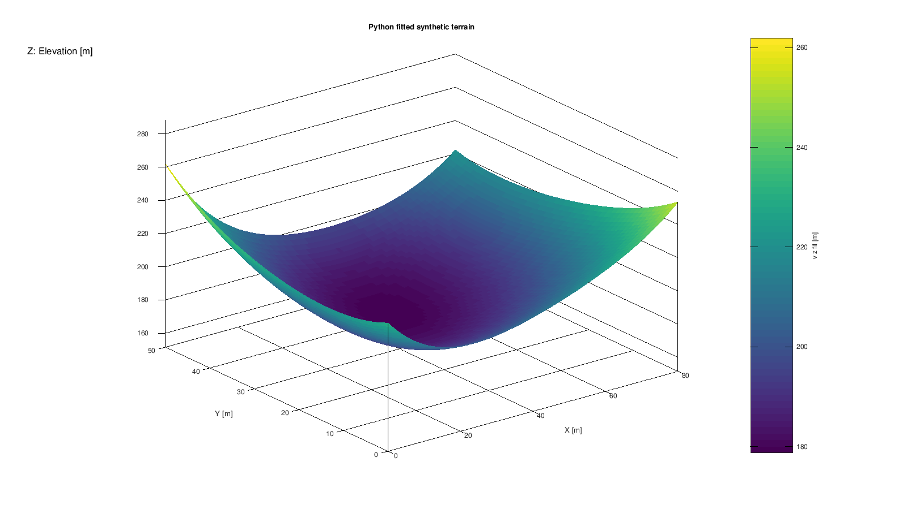
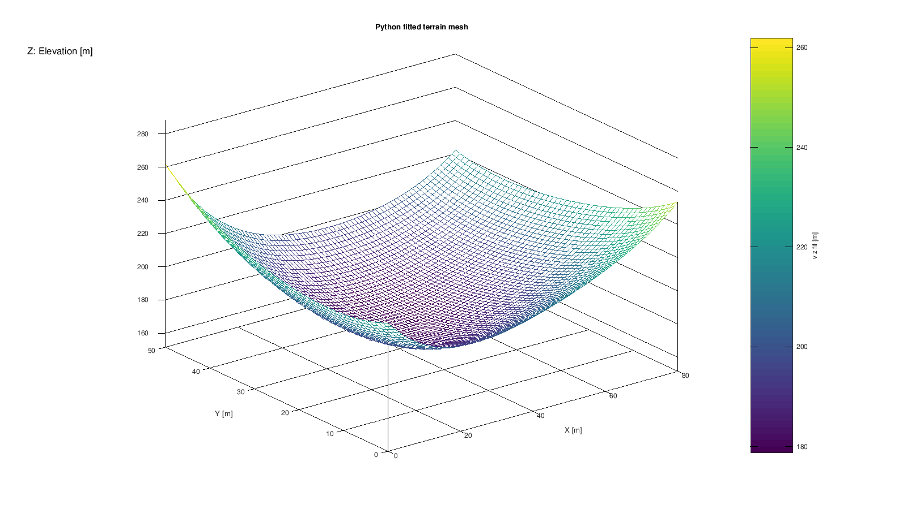

Target: GX-TXT 0.9.8.10-dev-097, Debian. Figures are actual scientific render artifacts from the verified development candidate, not GUI screenshots. Scientific/API/Script evidence is retained. Additional final GUI matrices: NOT RUN — USER-ACCEPTED. Frozen release/package acceptance remains pending; the final release receipt supplies archive identity.
Create a new Session and use Python Script Workspace. Register the supplied source files under their displayed names, select the listed Analysis Source bindings, and run each stage in order. Wait for its Job to complete before the next step. Keep the original source data intact. Save the Session normally; reopening uses its persistent scientific identities.
Import the supplied CSV without changing its order and import its portable metadata. Preserve stable variables x_m, y_m, z_m, profile_id and profile_y_m; X/Y/Z/profile-Y units are m and the profile ID is dimensionless. The revised 1.1.0 fit source uses public Numeric least_squares and matrix prediction. The custom basis description polynomial_total_degree is retained separately from canonical statistical model math.numeric.linear_design. response_rmse divides physical residual SSE by N; residual standard deviation divides by residual DOF. CORE records 891 observations and 876 residual DOF. Estimated noise variance does not justify known-sigma reduced chi squared. The mesh representation is a persistent interactive scientific object, distinct from its static graph image.
SHA256 5c6578df5f79cd5f06e8688a6f8a9facb7d86b1aa1101220870708667c943e74SHA256 7b4f8830b9712f1a3cdbbee86b79288db94f5e00c4a0cafbf8dff3bd141ebcc0SHA256 b8f31b06a7fd55449eb27664cb4ebae361bf9948a39b1bb9f8889d1d2f3b114bSHA256 ed43a4b140ed3437cde3a95ba01aa5785c10eb85b9b683f5942746cc739a34a1| Script | Inputs | Result |
|---|---|---|
tutorial_terrain_fit_dev097.py | primary → tutorial.terrain_profiles_raw | Fit the total-degree-four normalized polynomial and publish tutorial.terrain_surface_fit. |
02_render_surface_v3.py | primary → tutorial.terrain_surface_fit | Create the ordinary surface Plot Variant. |
03_build_mesh_scene_v3.py | primary → tutorial.terrain_surface_fit | Create the mesh Variant and its persistent Native3D representation. |
04_verify_after_reopen.py | primary → tutorial.terrain_surface_fit | Verify metadata, both XYZ Variants and the interactive representation after a fresh Session load. |
The published source contains 891 rows: eleven Y profiles, each with 81 X positions. X is 0…80 m; Y is 0…50 m in 5 m steps. The model has 15 coefficients and is evaluated on an 81 × 51 grid (4,131 rows). RMSE is 0.5755625967901292 m and R² is 0.9987124806014481. All coefficients and surface values match an independent NumPy reference within 1e−8; metric tolerance is 1e−9.

425492e247a7253afa398cf4cb1f67da9df6abacb457f6b095a9c8e9378af670. No historical screenshot is presented as new evidence.
a536e764051a10ec39e99b2f0d08ff1454256a9110f82768f4281b510ee57962. No historical screenshot is presented as new evidence.CANONICAL_DATASET_API_v2; DATASET_VARIABLE_SCHEMA_API_v3; DATASET_METADATA_API_v1; NUMERIC_API_v1; STATISTICAL_RESULT_SEMANTICS_API_v1; DATASET_PUBLICATION_API_v2; PLOT_DATASET_API_v3; INTERACTIVE_DOCUMENT_API_v1; NATIVE_3D_VIEWER_API_v1; SESSION_PERSISTENCE_API_v1
Complete Jobs: fit 17.924 s, surface 12.833 s, mesh/scene 19.933 s and persistence verification 6.672 s. These include publication and Bridge overhead.
The complete Terrain and downstream residual workflows passed 38 independent checks and 17 stored-meaning checks in checkpoint 191. One synchronized Native3D representation and Interactive Document survive a fresh Session process.
Job completion alone does not certify scientific values or graph semantics. These guides include independent value checks and actual artifact inspection. Omitted GUI tests are never counted as PASS. A release verification manifest will identify the exact frozen source and package used for installation.